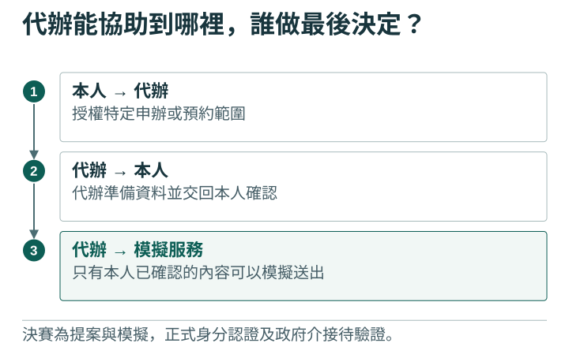

情境與目標
數位服務使用者可能需要他人協助，但資料授權與最後送出責任仍應清楚。我以授權協作為題，規劃代辦準備內容、本人確認後才能模擬送出的流程。
- 協助者準備內容，本人保留確認與決定權。
- 決賽聚焦單次、一案、一位代辦的模擬流程。

系統架構與流程
架構說明
- 輸入
- 申辦與預約場景、本人與代辦的協作需求。
- 處理方式
- 規劃授權、資料準備、本人確認與模擬送出的操作規則。
- 產出
- 產品規格、團隊決賽展示與上台報告。
流程圖

原始成果畫面

操作介面與互動
原始模擬服務畫面分開本人與代辦入口，提供掃碼及連結協助路徑；模擬服務標記保持可見，沒有把展示角色選擇當成正式身分驗證。


1 / 2
更多技術細節
畫面與後端各自負責什麼
本人與代辦使用各自畫面，共用後端案件狀態。決賽材料採 Vue 3／TypeScript、Node.js／Express 及 SQLite，城市通 App 以 WebView 提供入口；團隊依規格分工設計與實作。正式認證、政府及院所介接尚未完成。
設計範圍與展示範圍分開
完整規格探討期間授權與多案件，決賽收斂為單次協作與模擬回執。App Bridge、附件選擇器與完整雙手機體驗仍列待驗收；機構名單不代表可以實際預約或保證名額。
確認必須對應同一版內容
規格將本人確認綁定案件 revision；表單或附件修改後，舊確認失效，須重新確認。短效接手碼用於協作領取，不等於政府身分認證。
撤回授權與重試的處理
規格要求每次請求核對登入、案件歸屬與授權，停止協助後阻擋後續存取；模擬送出使用冪等鍵避免重複建立回執。撤回後續權限與取消既有提交是不同操作，須分開處理。
成果與驗證範圍
實際產出
完成提案規格與決賽簡報，團隊入圍決賽；展示聚焦單次、一案、一位代辦的模擬協作流程。
驗證與限制
成果為提案及模擬流程；正式身分認證、政府介接及真實送件仍待驗證。
- 競賽規模
- 全台 85 隊、395 人報名；40 隊晉級正式賽。
- 參賽成果
- 團隊入圍決賽。